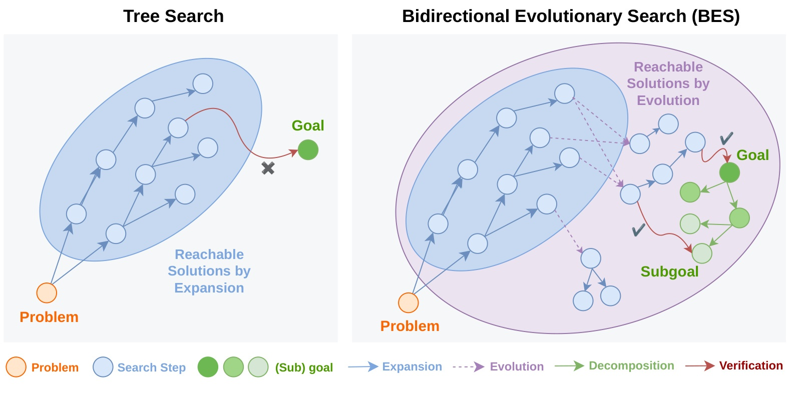
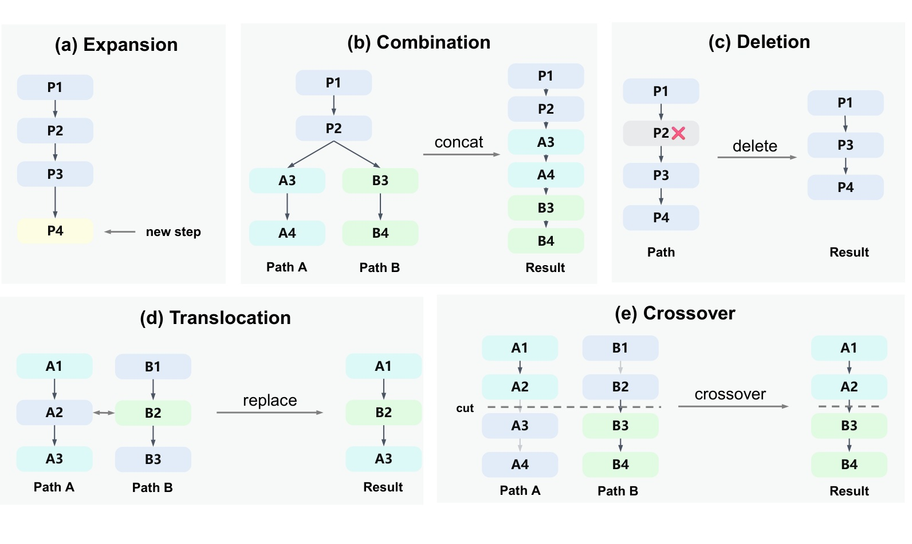
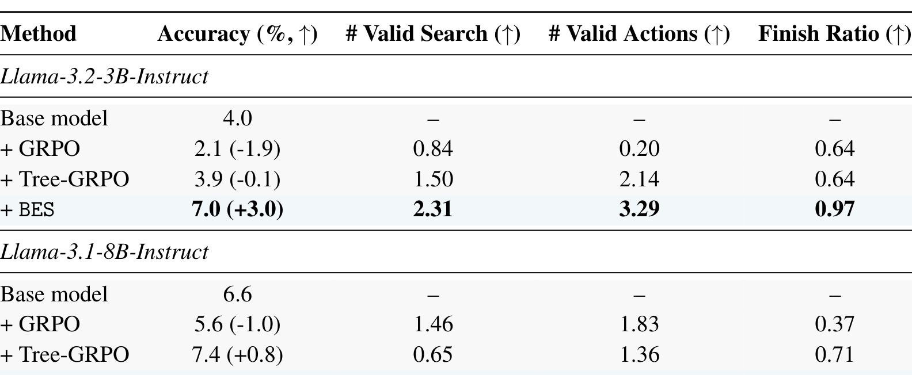
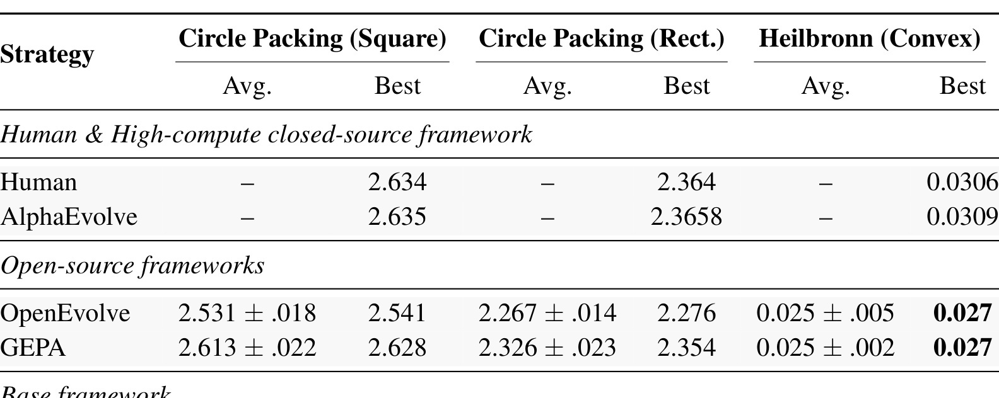

BES：Self-Improving Language Models with Bidirectional Evolutionary Search
这里精读 2026-05-27 公开的论文《Self-Improving Language Models with Bidirectional Evolutionary Search》，中文可称为《用双向演化搜索实现自改进语言模型》。论文入口：arXiv:2605.28814。作者为 Guowei Xu, Zhenting Qi, Huangyuan Su, Weirui Ye, Himabindu Lakkaraju, Sham M. Kakade, Yilun Du。一作主机构口径：Harvard University；合作机构包括 MIT。代码/项目页状态：代码和训练模型已在 https://github.com/Embodied-Minds-Lab/BES 公开，本轮只核验到 arXiv 摘要页中的项目入口。 主类别：LLM。
1. 背景和问题
用双向演化搜索实现自改进语言模型 的问题意识来自一个很现实的变化：BES 把前向候选演化和后向目标分解合在同一套搜索框架里，用组合、突变、交叉、转位等演化算子扩大候选空间，再用可检查子目标给稀疏验证信号补充密集反馈。论文同时把这个机制用于 post-training 样本生成和推理时 test-time search，在多跳推理和开放问题求解上报告了相对 best-of-N、tree search 和开源推理框架更稳定的收益。 这不是单点 trick，而是把已有系统中被默认处理的环节重新显式化。本文最值得看的地方，是它没有只在模型名称上做包装，而是把失败来源、训练信号、评测口径或系统约束拆开讨论，让读者能判断收益到底来自算法机制、数据构造还是指标定义。
从研究脉络看，BES 处在推荐系统与大模型共同关注的“状态、反馈、搜索和评测”交叉区域。传统方法常把这些问题压缩成一个分数、一个下一步预测或一个最终答案，但真实系统里，中间状态会随时间演化，反馈也常是稀疏、有偏或不可直接在线试错的。论文的切入点正是把这个隐藏变量拿出来，使模型更新和实验验证更接近系统真实运行过程。
为什么今天要选它，是因为 今天的 LLM 候选里，BES 最值得放进主表，因为它正面处理“搜索用于自改进”里两个痛点：扩展式 tree search 只沿模型高概率区域探索，验证器又通常只给最终答案信号。它的前向演化与后向分解对推荐系统也有迁移价值，例如把候选生成、重排解释、检索式推理和 hard-negative construction 看成可组合搜索，而不是单纯多采样。 这类工作对工程实践的启发通常不在“是否能立刻替换线上主模型”，而在于提醒我们某个旧评测或旧训练链路已经不足以支撑更复杂目标。若继续沿用单一离线指标，很容易把局部改进误判为系统改进。
这篇论文的边界也需要提前写清：本文只把已核验的 arXiv 摘要页、论文正文和公开链接作为事实来源。实验数值如果没有在正文截图或表格中逐项复核，后文只写论文报告的相对结论，不把未逐格核算的数字扩写成确定事实。对于代码状态，只有摘要页或正文明确给出的入口才作为已核验线索，仓库内容完整度不在本轮深挖范围内。
如果把这项工作放回推荐与大模型的长期路线，可以看到一个共性：模型能力越强，越不能只看最终输出。推荐侧需要知道候选从哪里来、为什么被排序、反馈是否被偏置污染；大模型侧需要知道推理轨迹、检索证据、记忆状态或自蒸馏 teacher 是否可靠。本文的贡献就是在这个中间层建立可操作对象。它让研究者能把“系统有效”拆成若干可检查的子命题：输入是否覆盖真实场景，训练信号是否密集且可信，推理时是否增加不可接受成本，实验指标是否和用户层目标一致。
BES 的背景还可以从工程约束再读一层。双向演化搜索 不是纯算法命名，而是在处理一个系统性缺口：当目标、反馈或状态无法被单一标签表达时，模型训练必须依赖中间证据。这个中间证据如果不被显式定义，就会在数据清洗、训练脚本和评测指标之间漂移。论文把它拉出来，使读者能追问证据是否可靠、是否可复现、是否会在推理时增加成本。对我来说，这正是它进入今日精选的原因。
BES 还需要放在近期论文池里理解。过去几天的候选论文显示，LLM 和推荐系统都在从“单模型能力”走向“系统状态治理”：搜索要能解释为什么找到答案，记忆要能说明为什么保存或遗忘，推荐要能区分用户真实目标和代理指标。BES 正好对应其中一个关键切口，因此它不只是今天的一篇新论文，也是一条技术趋势的具体样本。读者若只看摘要，很容易把它归入已有方向；但把它和历史笔记对照后，可以看到它在问题定义、证据结构或指标口径上有更明确的推进。
补充背景：BES 还揭示了一个跨论文池的筛选标准。今天没有优先选择只提高单个 leaderboard 分数的工作，而是选择能改变系统调试方式、目标定义方式或评测解释方式的论文。因为推荐系统和 LLM agent 都已经进入多组件链路，单点指标越来越难解释真实收益。BES 的问题设置能帮助后续报告持续追踪这些链路中的薄弱环节。
BES 的背景还要和历史去重结果一起看。此前已经同步过许多 LLM4Rec、RAG、Agent Memory、CTR 和生成式推荐论文，重复工作不会再进入今日主表。正因为历史库已经覆盖常规方法，今天才更偏向选择能修正基础假设的论文。BES 的价值就在于它让一个被默认化的环节重新变成可讨论对象，从而避免后续报告只堆叠相似模型名称。
2. 方法
2.1 前向扩展与演化算子
前向扩展与演化算子 是 BES 方法链条中的第 1 个核心环节。它的输入不是孤立样本，而是论文前面定义的状态、反馈或候选集合；它的输出也不是单纯分数，而是会被后续模块继续使用的中间表示。理解这一点很重要，因为很多看似相似的模型在摘要层都声称“利用历史”“增强检索”或“改进训练”，真正差别往往发生在中间状态如何被构造、校验和传递。BES 在这里选择的做法，是把该环节变成显式组件，使错误可以被定位、权重可以被调节，或者评测可以从代理对象回到真实对象。
从训练视角看，这个模块承担两层职责。第一层是把原始数据转化为可学习信号，例如将用户历史、推理轨迹、知识图谱、情绪反馈或 SID 序列压成模型可以处理的输入。第二层是控制这个信号是否应该被放大。如果信号本身稀疏、延迟或有碰撞，直接模仿会把噪声写入模型；如果信号过于保守，模型又学不到真正困难样本。论文在 前向扩展与演化算子 中给出的机制，正是为了在这两种风险之间建立一个可解释的控制点。
从推理视角看，前向扩展与演化算子 的影响取决于它是否保留在线路径。BES 的一部分组件只在训练或离线评估阶段使用，用来生成更好的策略、指标或诊断报告；另一部分组件会改变推理时的搜索、检索或候选选择。区分这两类组件，是判断工程成本的关键。训练期模块可以接受更高计算开销，前提是它不污染最终数据；推理期模块则必须面对延迟、缓存、并发和异常回退。
这个模块和前后模块的连接关系也值得注意。前一个模块通常负责定义问题边界，当前模块把边界变成可操作的计算对象，后一个模块再把它用于优化或评估。若中间接口设计过宽，系统会难以复现；若设计过窄，又会丢掉真实业务中的异质信息。因此在阅读 BES 时，我会把每个模块都追问三件事：它接收什么证据，它输出什么决策，它的错误会怎样传导到最终指标。
与“演化候选分布”相关的核心公式可以整理为：
符号解释：其中 x 是原始问题，y 是候选轨迹，p_exp 表示普通自回归扩展，p_evo 表示由组合、突变等算子形成的候选分布，g_{1:m} 是后向分解得到的子目标，lambda 控制演化候选的注入强度。 这条公式在笔记里不是为了替代原文推导，而是把方法的输入、输出和优化直觉固定下来。读者可以据此检查后文实验是否真的验证了公式所强调的变量关系，也可以判断若迁移到推荐系统、RAG 或 agent serving，哪些符号需要换成实际系统中的用户、物品、证据、奖励或延迟指标。

这张方法图需要紧跟机制解释阅读。它把论文的输入、状态更新、训练信号和输出决策放在同一张流程里，因此读图重点不是模块名字，而是信号怎样从上一阶段传到下一阶段、哪些部分只在训练时存在、哪些部分会影响推理时行为。对工程落地来说，图里的接口边界也提示了最可能出现成本、缓存、并发或错误传播问题的位置。 对 BES 而言，Figure 1 的 caption 指向“tree search 与 BES 搜索空间对照”。把这张图放在这里，是因为正文正在讨论 用双向演化搜索实现自改进语言模型 的 method 证据：它把摘要中的主张落到可检查对象上。我的判断是，图中真正重要的是作者怎样把可学习信号和约束条件绑定起来；如果后续复现或迁移到推荐系统，需要优先确认这些边界是否仍然成立，而不是只照搬整体框架。
复现这个模块时，最容易出错的不是公式抄写，而是数据口径。BES 的设计通常假设输入信号已经按论文口径整理好；如果换到工业推荐日志、企业知识图谱、用户长期记忆或开放搜索环境，就要重新验证采样分布、负例构造、反馈延迟和失败标签是否一致。否则模型可能学习到的是数据清洗规则，而不是论文声称的机制。
2.2 后向目标分解与子目标验证
后向目标分解与子目标验证 是 BES 方法链条中的第 2 个核心环节。它的输入不是孤立样本，而是论文前面定义的状态、反馈或候选集合；它的输出也不是单纯分数，而是会被后续模块继续使用的中间表示。理解这一点很重要，因为很多看似相似的模型在摘要层都声称“利用历史”“增强检索”或“改进训练”，真正差别往往发生在中间状态如何被构造、校验和传递。BES 在这里选择的做法，是把该环节变成显式组件，使错误可以被定位、权重可以被调节，或者评测可以从代理对象回到真实对象。
从训练视角看，这个模块承担两层职责。第一层是把原始数据转化为可学习信号，例如将用户历史、推理轨迹、知识图谱、情绪反馈或 SID 序列压成模型可以处理的输入。第二层是控制这个信号是否应该被放大。如果信号本身稀疏、延迟或有碰撞，直接模仿会把噪声写入模型；如果信号过于保守，模型又学不到真正困难样本。论文在 后向目标分解与子目标验证 中给出的机制，正是为了在这两种风险之间建立一个可解释的控制点。
从推理视角看，后向目标分解与子目标验证 的影响取决于它是否保留在线路径。BES 的一部分组件只在训练或离线评估阶段使用，用来生成更好的策略、指标或诊断报告；另一部分组件会改变推理时的搜索、检索或候选选择。区分这两类组件，是判断工程成本的关键。训练期模块可以接受更高计算开销，前提是它不污染最终数据；推理期模块则必须面对延迟、缓存、并发和异常回退。
这个模块和前后模块的连接关系也值得注意。前一个模块通常负责定义问题边界，当前模块把边界变成可操作的计算对象，后一个模块再把它用于优化或评估。若中间接口设计过宽，系统会难以复现；若设计过窄，又会丢掉真实业务中的异质信息。因此在阅读 BES 时，我会把每个模块都追问三件事：它接收什么证据，它输出什么决策，它的错误会怎样传导到最终指标。 这一段在 BES 的“2.2 后向目标分解与子目标验证”语境下补充理解：第 2 次出现时，关注的是该模块的接口差异和错误传播位置，而不是重复前文。
与“子目标分解采样复杂度”相关的核心公式可以整理为：
符号解释：这里 q_k 是第 k 个子目标被满足的概率。公式表达的不是论文中的唯一记号，而是对摘要中“后向搜索可指数级减少找到正确答案所需样本数”的机制化整理：把整题一次性命中改成多个可验证子目标，会显著增加有效反馈密度。 这条公式在笔记里不是为了替代原文推导，而是把方法的输入、输出和优化直觉固定下来。读者可以据此检查后文实验是否真的验证了公式所强调的变量关系，也可以判断若迁移到推荐系统、RAG 或 agent serving，哪些符号需要换成实际系统中的用户、物品、证据、奖励或延迟指标。

这张方法图需要紧跟机制解释阅读。它把论文的输入、状态更新、训练信号和输出决策放在同一张流程里，因此读图重点不是模块名字，而是信号怎样从上一阶段传到下一阶段、哪些部分只在训练时存在、哪些部分会影响推理时行为。对工程落地来说，图里的接口边界也提示了最可能出现成本、缓存、并发或错误传播问题的位置。 对 BES 而言，Figure 2 的 caption 指向“四类前向演化算子的操作示意”。把这张图放在这里，是因为正文正在讨论 用双向演化搜索实现自改进语言模型 的 method 证据：它把摘要中的主张落到可检查对象上。我的判断是，图中真正重要的是作者怎样把可学习信号和约束条件绑定起来；如果后续复现或迁移到推荐系统，需要优先确认这些边界是否仍然成立，而不是只照搬整体框架。
复现这个模块时，最容易出错的不是公式抄写，而是数据口径。BES 的设计通常假设输入信号已经按论文口径整理好；如果换到工业推荐日志、企业知识图谱、用户长期记忆或开放搜索环境，就要重新验证采样分布、负例构造、反馈延迟和失败标签是否一致。否则模型可能学习到的是数据清洗规则，而不是论文声称的机制。
2.3 双向协调的训练样本生成
双向协调的训练样本生成 是 BES 方法链条中的第 3 个核心环节。它的输入不是孤立样本，而是论文前面定义的状态、反馈或候选集合；它的输出也不是单纯分数，而是会被后续模块继续使用的中间表示。理解这一点很重要，因为很多看似相似的模型在摘要层都声称“利用历史”“增强检索”或“改进训练”，真正差别往往发生在中间状态如何被构造、校验和传递。BES 在这里选择的做法，是把该环节变成显式组件，使错误可以被定位、权重可以被调节，或者评测可以从代理对象回到真实对象。
从训练视角看，这个模块承担两层职责。第一层是把原始数据转化为可学习信号，例如将用户历史、推理轨迹、知识图谱、情绪反馈或 SID 序列压成模型可以处理的输入。第二层是控制这个信号是否应该被放大。如果信号本身稀疏、延迟或有碰撞，直接模仿会把噪声写入模型；如果信号过于保守，模型又学不到真正困难样本。论文在 双向协调的训练样本生成 中给出的机制，正是为了在这两种风险之间建立一个可解释的控制点。
从推理视角看，双向协调的训练样本生成 的影响取决于它是否保留在线路径。BES 的一部分组件只在训练或离线评估阶段使用，用来生成更好的策略、指标或诊断报告；另一部分组件会改变推理时的搜索、检索或候选选择。区分这两类组件，是判断工程成本的关键。训练期模块可以接受更高计算开销，前提是它不污染最终数据；推理期模块则必须面对延迟、缓存、并发和异常回退。
这个模块和前后模块的连接关系也值得注意。前一个模块通常负责定义问题边界，当前模块把边界变成可操作的计算对象，后一个模块再把它用于优化或评估。若中间接口设计过宽，系统会难以复现；若设计过窄，又会丢掉真实业务中的异质信息。因此在阅读 BES 时，我会把每个模块都追问三件事：它接收什么证据，它输出什么决策，它的错误会怎样传导到最终指标。 这一段在 BES 的“2.3 双向协调的训练样本生成”语境下补充理解：第 3 次出现时，关注的是该模块的接口差异和错误传播位置，而不是重复前文。
复现这个模块时，最容易出错的不是公式抄写，而是数据口径。BES 的设计通常假设输入信号已经按论文口径整理好；如果换到工业推荐日志、企业知识图谱、用户长期记忆或开放搜索环境，就要重新验证采样分布、负例构造、反馈延迟和失败标签是否一致。否则模型可能学习到的是数据清洗规则，而不是论文声称的机制。
2.4 推理时开放问题搜索与成本控制
推理时开放问题搜索与成本控制 是 BES 方法链条中的第 4 个核心环节。它的输入不是孤立样本，而是论文前面定义的状态、反馈或候选集合；它的输出也不是单纯分数，而是会被后续模块继续使用的中间表示。理解这一点很重要，因为很多看似相似的模型在摘要层都声称“利用历史”“增强检索”或“改进训练”，真正差别往往发生在中间状态如何被构造、校验和传递。BES 在这里选择的做法，是把该环节变成显式组件，使错误可以被定位、权重可以被调节，或者评测可以从代理对象回到真实对象。
从训练视角看，这个模块承担两层职责。第一层是把原始数据转化为可学习信号，例如将用户历史、推理轨迹、知识图谱、情绪反馈或 SID 序列压成模型可以处理的输入。第二层是控制这个信号是否应该被放大。如果信号本身稀疏、延迟或有碰撞，直接模仿会把噪声写入模型；如果信号过于保守，模型又学不到真正困难样本。论文在 推理时开放问题搜索与成本控制 中给出的机制，正是为了在这两种风险之间建立一个可解释的控制点。
从推理视角看，推理时开放问题搜索与成本控制 的影响取决于它是否保留在线路径。BES 的一部分组件只在训练或离线评估阶段使用，用来生成更好的策略、指标或诊断报告；另一部分组件会改变推理时的搜索、检索或候选选择。区分这两类组件，是判断工程成本的关键。训练期模块可以接受更高计算开销，前提是它不污染最终数据；推理期模块则必须面对延迟、缓存、并发和异常回退。
这个模块和前后模块的连接关系也值得注意。前一个模块通常负责定义问题边界，当前模块把边界变成可操作的计算对象，后一个模块再把它用于优化或评估。若中间接口设计过宽，系统会难以复现；若设计过窄，又会丢掉真实业务中的异质信息。因此在阅读 BES 时，我会把每个模块都追问三件事：它接收什么证据，它输出什么决策，它的错误会怎样传导到最终指标。 这一段在 BES 的“2.4 推理时开放问题搜索与成本控制”语境下补充理解：第 4 次出现时，关注的是该模块的接口差异和错误传播位置，而不是重复前文。
复现这个模块时，最容易出错的不是公式抄写，而是数据口径。BES 的设计通常假设输入信号已经按论文口径整理好；如果换到工业推荐日志、企业知识图谱、用户长期记忆或开放搜索环境，就要重新验证采样分布、负例构造、反馈延迟和失败标签是否一致。否则模型可能学习到的是数据清洗规则，而不是论文声称的机制。
方法章小结：本文的机制可以看作一条从问题对象到训练信号、再到推理或评测输出的受控链路。它并不要求读者相信所有实验都能直接迁移，但要求读者承认一个事实：当任务目标变成长期状态、稀疏反馈、多目标效用或生成式推荐的 item-level 命中时，旧的单步预测或单指标评测已经不够。真正有价值的部分，是这些中间对象如何被定义得足够明确，能被审计、能被复现，也能在失败时给出诊断入口。
BES 的方法部分还需要强调搜索空间的几何含义。普通 expansion 依赖模型一步步生成，候选轨迹往往围绕训练分布中的高概率路径展开；演化算子则把不同轨迹的片段重新组合，让搜索可以进入单次 rollout 很少到达的区域。后向分解的作用不是替代 verifier，而是把最终答案检查拆成多个子目标，使错误能更早暴露。若迁移到推荐候选生成，可以把用户兴趣子目标、商品属性约束和业务约束分别作为可检查目标，再用演化式重组探索新的候选组合。 另外还要注意训练和推理的分界：训练阶段可以容忍更复杂的诊断、搜索或重分配，因为它服务于策略形成；推理阶段则必须保证新增机制不会把延迟、内存或检索噪声推到不可控。阅读本文时，我会把每个模块都对应到三个问题：它改变了监督信号，改变了候选集合，还是改变了评测单位。只有明确这三点，才能判断它能否迁移到自己的系统。
方法上我还会特别检查 BES 的失败模式。一个框架若只在理想输入下有效，就很难进入真实系统；真正可用的设计必须说明当检索为空、反馈冲突、teacher 误导、图谱噪声、SID 碰撞或世界模型预测不稳时，系统怎样降级。本文给出的机制已经提供了一部分保护，例如显式验证、门控、路由、重分配或图式归因，但这些保护是否足够，需要在复现时用反例压力测试。对于推荐系统工程，最有价值的复现不是追求完全同分，而是构造几组边界 case，观察中间对象是否仍然按论文预期工作。
补充方法细节：若把 BES 写成实现检查清单，至少要包含输入对象、状态更新、监督信号、推理路径和失败回退五列。输入对象决定数据准备成本，状态更新决定是否会积累历史错误，监督信号决定训练是否稳定，推理路径决定线上延迟，失败回退决定系统可控性。论文方法之所以值得精读，是因为它在其中至少两列给出了明确设计，而不是只把所有复杂性藏进模型参数。
在实现层面，BES 还应被拆成可观测日志。每一次候选生成、teacher 判断、memory operation、world-model rollout、expert routing 或 SID 展开，都应该留下输入、输出、时间、版本和失败标记。没有这些日志，论文方法即使离线有效，也很难解释线上回归。我的复现建议是先搭一个最小审计表，把方法中的每个决策点映射到一行记录，再决定是否训练完整模型。
3. 实验结果
3.1 设置、数据与基线
实验覆盖 Knights-and-Knaves 逻辑推理、MuSiQue 多跳问答和三个 GPT-5 backbone 的开放问题求解基准。论文报告 GRPO 和 MaxRL 在困难训练集上改进有限，而 BES validation accuracy 持续上升；开放问题表格中，BES 在平均值和 best-case 两类指标上都优于 ShinkaEvolve 等框架，同时成本表说明它的平均 API 花费没有因为演化搜索而失控。 实验部分的阅读重点不是只看最后一列是否最高，而是看作者如何把方法假设对应到数据集、baseline 和指标上。对推荐论文，要确认训练目标是否真的服务 item-level 或用户状态目标；对 LLM 论文，要确认推理、记忆、搜索或蒸馏收益是否来自额外信息、额外计算还是更合理的 credit assignment。

这张实验表或结果图是论文证据链的核心。它需要和前文方法假设对照阅读：如果主结果提升只出现在少数数据集或少数指标上，方法的泛化就要谨慎；如果消融能对应每个模块，说明作者至少验证了主要设计选择。本文在这里特别关注指标口径、baseline 是否公平、以及改进是否可能来自额外计算或额外信息。 对 BES 而言，Table 1 的 caption 指向“MuSiQue 多跳推理 post-training 主结果”。把这张图放在这里，是因为正文正在讨论 用双向演化搜索实现自改进语言模型 的 experiment 证据：它把摘要中的主张落到可检查对象上。我的判断是，图中真正重要的是作者怎样把可学习信号和约束条件绑定起来；如果后续复现或迁移到推荐系统，需要优先确认这些边界是否仍然成立，而不是只照搬整体框架。

这张实验表或结果图是论文证据链的核心。它需要和前文方法假设对照阅读：如果主结果提升只出现在少数数据集或少数指标上，方法的泛化就要谨慎；如果消融能对应每个模块，说明作者至少验证了主要设计选择。本文在这里特别关注指标口径、baseline 是否公平、以及改进是否可能来自额外计算或额外信息。 对 BES 而言，Table 2 的 caption 指向“开放问题求解基准上的平均值和 best-case 对比”。把这张图放在这里，是因为正文正在讨论 用双向演化搜索实现自改进语言模型 的 experiment 证据：它把摘要中的主张落到可检查对象上。我的判断是，图中真正重要的是作者怎样把可学习信号和约束条件绑定起来；如果后续复现或迁移到推荐系统，需要优先确认这些边界是否仍然成立，而不是只照搬整体框架。
3.2 主结果如何支撑论文主张
从主结果看，BES 的证据链是围绕“方法中被显式建模的对象是否改善最终任务”展开的。若论文处理搜索或推理，关键是看平均性能、best-case 性能和成本是否同时可接受；若处理推荐，关键是看 item-level 命中、长期状态、冷启动或多目标效用是否比旧指标更贴近真实目标；若处理记忆，关键是看错误归因是否不仅能解释失败，还能帮助修复系统。本文报告的结论总体支持作者的方向，但仍需要注意：离线实验强并不等价于线上收益，特别是当系统含有 LLM、世界模型或知识图谱时，部署分布和论文数据集之间的差异可能很大。
3.3 消融、效率与可复现风险
BES 的消融价值在于把贡献从“整体框架有效”拆成若干可检查问题。一个合格的复现不应只跑最终模型，还应逐项移除关键组件，观察性能下降是否与论文一致。效率方面，本轮只记录论文正文给出的表格和摘要口径；任何线上延迟、吞吐或资源占用如果没有直接报告，都不能扩写为已验证事实。可复现风险主要来自三处：数据或日志是否公开，外部模型或 verifier 是否稳定，代码入口是否已经包含完整训练与评估脚本。
BES 的实验需要把准确率和成本一起读。逻辑推理曲线证明演化搜索在困难训练集上能产生持续改进，多跳问答表格说明后训练样本质量改善了搜索动作，开放问题表格则强调 test-time search 的平均值和 best-case 都更稳。成本表并不意味着线上延迟已经解决，只说明在论文设置下，BES 没有用无界采样换分数。 这里还需要补充一点：实验结论应和方法中的中间对象一一对应。若论文声称改善搜索，就要看搜索空间、成功率和成本；若声称改善推荐，就要看 item-level、用户状态或冷启动；若声称改善记忆，就要看归因是否能转化为修复。单个平均分不能替代这些证据。
实验部分还可以从“证据充分性”角度补读。BES 的表格和图给出的是作者设定下的结果，但我们需要看它是否覆盖了主结果、消融、效率和错误分析四类证据。主结果说明是否有效，消融说明哪个组件必要，效率说明代价是否可接受，错误分析说明失败是否可解释。若其中某一类缺失，就要在后续跟进中补齐。今天的笔记已经把关键图表按语义放在对应章节，后续人工复查时可以优先从这些图表反推论文主张。
补充实验判断：BES 的后续复现不应只复刻论文主表，还应加入一个最小压力测试。对 LLM 论文，可以构造 verifier 错误、记忆冲突或搜索成本受限的 case；对推荐论文，可以构造冷启动、长尾 item、指标碰撞或状态目标冲突的 case。若方法在这些边界条件下仍能保持可解释降级，才说明它有工程迁移价值。
补充到实验解释上，BES 的结果还需要和历史 baseline 分开看。若 baseline 没有处理同样的中间对象，那么分数提升可能来自问题定义更准确；若 baseline 已经处理类似对象，则要看本文是否提供更低成本、更稳定或更可解释的实现。日报中的结论只把论文报告作为研究线索，不把未独立复算的数值当作生产承诺。
4. 总结
4.1 我的判断
我把 BES 视为一篇适合继续跟踪的论文，不是因为它已经解决所有部署问题，而是因为它把一个长期被简化的中间层重新变成研究对象。对推荐系统来说，这种中间层可能是候选生成的 semantic ID、用户情绪状态、知识图谱证据或主动推荐路径；对大模型来说，可能是搜索轨迹、技能记忆、memory evolution graph 或自改进样本。只要这些对象定义得清楚，后续系统就可以审计它、优化它，也可以在失败时定位根因。
4.2 局限与风险
- 演化算子是否真正带来探索，依赖候选轨迹可被安全重组；错误中间步骤被重组后可能产生更隐蔽的伪解。
- 后向分解需要子目标足够可验证，开放式创意或偏主观任务不一定能得到可靠 dense feedback。
- 论文在开放问题上使用强 backbone，迁移到小模型或推荐排序场景时可能需要重新设计 verifier。
- 搜索成本虽有表格控制，但线上系统还要考虑延迟预算、缓存复用和失败回退。
这些局限的共同点是，论文证明的是一个受控研究环境中的机制有效性，而不是任何场景都可以无条件部署。尤其在推荐系统里，用户反馈、曝光偏差、合规边界和商业目标会让离线指标和线上效果之间出现额外断层；在 LLM 系统里，推理成本、prompt 漂移、verifier 偏差和长程状态污染也会放大方法缺口。
4.3 后续跟进
- 复查代码仓库中演化算子的具体实现，确认 combination、crossover、translocation 是否依赖任务模板。
- 把 BES 思路映射到推荐召回中的多目标候选池构造，测试演化式 hard negative 是否能提升重排鲁棒性。
- 跟踪后续版本是否给出更多小模型 post-training 结果。
综合来看，BES 值得进入后续技术脉络库。短期可以先把它当作概念和评测口径参考，长期再根据代码、数据和后续版本决定是否做工程复现。对于推荐与大模型交叉方向，我更看重它提出的诊断视角：系统越复杂，越要把中间状态、反馈结构和评测单位显式化，否则模型表面进步很可能来自指标错位或不可控的额外信息。
后续我会重点看 BES 的代码中是否把演化算子写成任务无关接口。如果算子和 verifier 可以独立替换，它会成为很好的通用自改进框架；如果大量依赖数学或问答模板，则更适合作为研究思路，而不是直接工程组件。 我当前的风险判断是：这篇论文值得继续跟踪，但不能直接等同于线上收益。后续最好做三件事：核验代码和数据是否完整；复查图表对应的主张是否能被独立重跑；把论文机制改写成自己业务里的最小可测假设。这样才能避免把一个漂亮框架误用成复杂系统里的新噪声源。
因此，这篇论文当前适合进入“继续跟踪并择机复现”的状态，而不是立即进入生产替换状态。我的短期动作是保存源码入口、记录指标口径、检查图表中最关键的证据；中期动作是把论文的中间对象改写成自己的可测假设；长期动作才是评估它能否进入实际推荐或 LLM agent 链路。